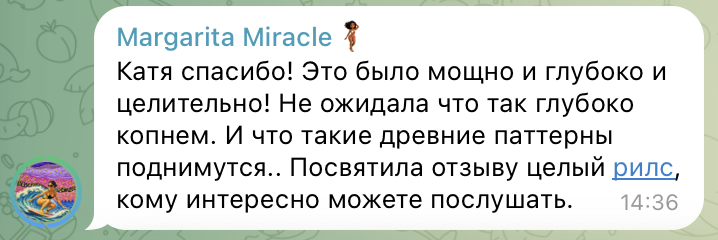
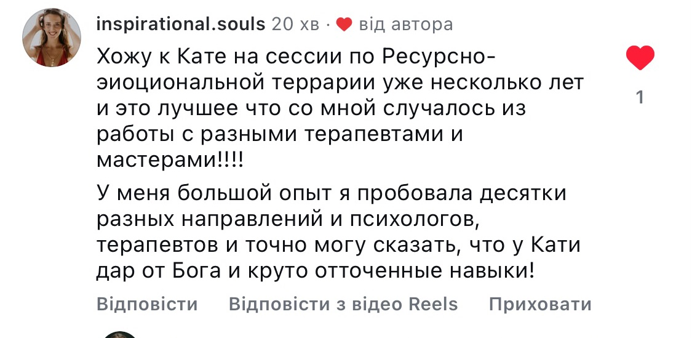
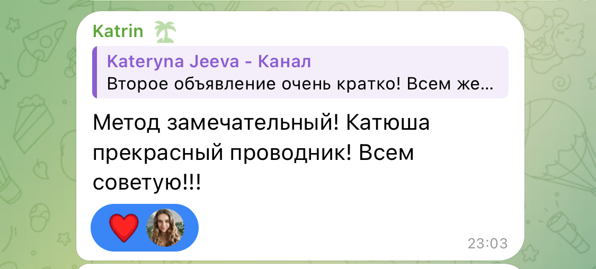
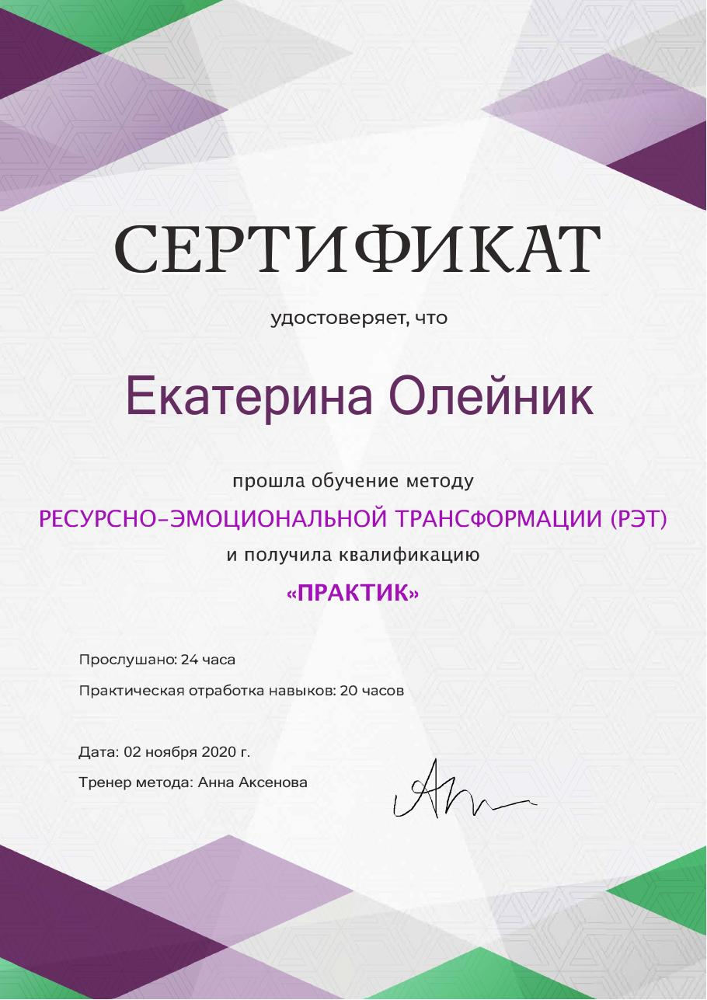

Работа с эмоциями
Мы находим, откуда растёт то, что вас беспокоит, и снимаем эмоциональный заряд с тех ситуаций, где всё началось. Работаем точечно: не прыгаем с темы на тему, а остаёмся с тем, с чем вы пришли.
«Работали со сложной ситуацией, которая долго влияет на мою жизнь, и за одну сессию сильно продвинулись в решении этой задачи. Как коллега могу отметить точность Катиной работы и эффективность метода.»

Что такое РЭТ
РЭТ (ресурсно-эмоциональная трансформация) позволяет глубоко разобрать вашу проблему и разложить её на аспекты. За каждым аспектом обычно стоит своё эмоциональное состояние — мы называем его эмоциональным шаблоном.
Такие шаблоны не берутся из ниоткуда: наши реакции складываются в детстве, чаще всего до 7 лет. Мы находим конкретную ситуацию, в которой появился шаблон, и снимаем с неё эмоциональный заряд. После этого проблема перестаёт быть проблемой и становится просто задачей: эмоции больше вас не блокируют.
Это не годы разговоров: почти любой запрос можно сдвинуть с мёртвой точки уже за одну сессию, а глубже изменить — за 3–5.
С чем можно прийти на сессию
Не обязательно заранее знать, с чем именно вы хотите поработать. Если что-то тревожит, мешает жить или повторяется снова и снова — этого достаточно. В начале сессии мы вместе разберёмся и сформулируем запрос.
Отношения
- Ссоры и конфликты с партнёром, детьми, родителями, коллегами
- Давняя обида, которая не отпускает
- Ревность и зависть
- Расставание, измена, когда вас оставили
- Близкий человек делает то, что вас ранит, — работаем с вашими чувствами
Потеря и одиночество
- Горе после смерти близкого человека
- Одиночество, ощущение, что вы никому не нужны или вас отвергли
- Жизнь далеко от дома, когда рядом нет своих
Страхи и тревога
- Тревога, паника, постоянное беспокойство о будущем
- Конкретные страхи, от которых всё замирает внутри
- Страх за близких, страх смерти
- Страх ошибиться
Эмоции, с которыми трудно справиться
- Злость, раздражение, вспышки гнева
- Чувство вины, в том числе перед ребёнком
- Стыд и неуверенность в себе
- Апатия, жалость к себе, ощущение «так будет всегда»
Деньги и работа
- Постоянная нехватка денег, ссоры из-за денег, стыд за свои финансы
- Убеждения о деньгах, которые мешают
- Несправедливость на работе, критика, увольнение
Привычки и действия
- «Хочу, но не могу» и «надо, но не хочу»: откладывание, лень
- Привычки, которые трудно остановить, и зависимости
Выбор и тупик
- Не можете решить: уйти или остаться, А или Б
- Ощущение, что вы «как в клетке» и выхода нет
Отношение к себе
- «Я недостаточно красивая / хорошая», болезненная реакция на критику внешности
- Детские запреты и убеждения, которые до сих пор управляют жизнью
Что меняется после сессий
У каждого свой путь, но вот что клиенты замечают чаще всего.
«Встреча с Катей получилась невероятно лёгкой — и по процессу, и по послевкусию. …А потом как-то без особых размышлений и тормозов сделала ровно то, о чём мы работали.»
Старая реакция больше не срабатывает
Ситуации и люди, которые раньше задевали за живое, воспринимаются спокойнее.
Воспоминания перестают ранить
Вы помните, что случилось, но боль и напряжение, которые вы носили в себе, уходят.
Возвращаются силы и лёгкость
Энергия, которая уходила на переживания, освобождается для жизни.
Легче действовать
То, что долго откладывалось, наконец делается — легко, без насилия над собой.
Отзывы








Скриншоты настоящих сообщений и комментариев клиентов. Листайте вбок, чтобы увидеть все.

Обо мне
Меня зовут Катерина. Я нашла метод РЭТ в 2018–2019 годах — сначала как клиентка. До этого я ходила к разным специалистам с разными запросами и пробовала разные подходы. Но каждый раз, когда разговор касался самого болезненного опыта из моего детства, становилось только тяжелее: проговаривание будто снова погружало меня в ту боль.
В РЭТ случилось наоборот. После каждой проработки воспоминания становились легче и менее болезненными — будто снимались целые слои. Я помню, что происходило, но боль и ужас, которые я носила в теле, ушли. За несколько сессий изменилось больше, чем за месяцы до этого.
Меня поразило, насколько точно работает метод: мы не обсуждаем всё подряд, а берём конкретный запрос, раскладываем его на аспекты и находим именно тот опыт, с которого всё началось.
В 2020 году я обучилась методу у тренера Анны Аксёновой и с тех пор провела больше 300 сессий для более чем 50 клиентов. Также преподаю кундалини-йогу на Пангане. Провожу сессии на русском, украинском и английском.


Сертификат «Практик» РЭТ2020 · 44 часа обучения · посмотретьЦены
Онлайн или вживую на Пангане
Знакомство
15 минут, онлайн Бесплатно Познакомимся и решим, с чего начатьОдна сессия
Онлайн, 1,5 часа 50 €4 сессии
Онлайн, чтобы глубже проработать тему 150 € 37,5 € за сессию — экономия 50 €Вживую
Для тех, кто на Пангане · 1,5 часа 3 000 бат ≈ 80 €Частые вопросы
То, что обычно волнует перед первой сессией
Сколько сессий мне понадобится?
У каждого по-своему: это зависит от запроса и от того, сколько тем вы захотите проработать. Обычно хватает от 1 до 5 сессий. На бесплатном знакомстве я подскажу, чего ожидать именно в вашем случае.
Нужно ли всё подробно рассказывать?
Нет. Достаточно того, чем вы готовы поделиться. Вы сами решаете, сколько подробностей говорить вслух.
А если станет тяжело или я буду плакать?
Это нормально: слёзы часто означают, что эмоция наконец выходит. Я рядом всё время, мы двигаемся в вашем темпе, и заканчиваем сессию в спокойном состоянии.
Вы психолог или психотерапевт?
Нет. Я сертифицированный практик метода РЭТ. Это не психотерапия: мы не разбираем прошлое в долгих разговорах, а снимаем эмоциональный заряд с конкретных ситуаций.
Это работает онлайн?
Да. Сессии проходят аудиозвонком, и многим так даже легче: вы дома, в безопасном месте, и можете полностью сосредоточиться на себе. Готовиться не нужно — только тихое место и наушники.
Когда можно провести сессию?
Я живу в Таиланде, но работаю с людьми в разных странах. Напишите мне — подберём время, удобное нам обоим.
Как проходит оплата?
Перед сессией, любым способом из блока «Цены». Если что-то изменится, сессию можно бесплатно перенести, предупредив за 24 часа.
Это конфиденциально?
Да. Всё, что вы рассказываете, остаётся между нами.
Кому РЭТ не подходит?
РЭТ не заменяет психологическую, психиатрическую или медицинскую помощь. Если у вас острый кризис, диагностированное психическое расстройство или вы принимаете психиатрические препараты, сначала обратитесь к врачу.
Начнём со знакомства
Напишите в двух словах, что вас беспокоит. На бесплатном знакомстве я честно скажу, чем могу помочь и сколько сессий может понадобиться. Пишите, даже если сомневаетесь.